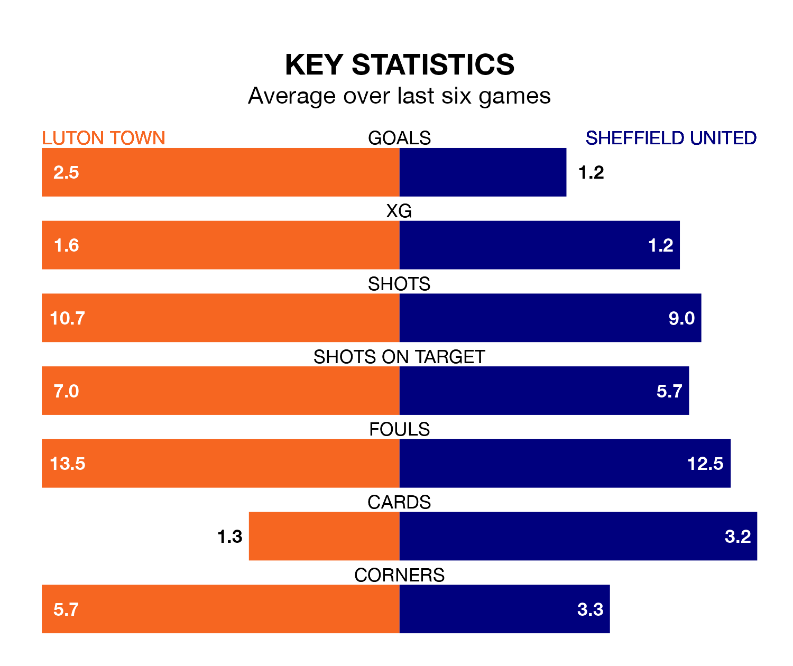

Saturday's match at Kenilworth Road sees two relegation candidates play each other, as 18th-ranked Luton Town host bottom of the table Sheffield United.
Luton have picked up 20 points from their first 20 Premier League games, with five wins and five draws.
That is 10 points more than the Blades have collected, having won two and drawn four.
Luton are in reasonable form in the Premier League, with three wins and two draws from their last six games.
With no wins and two draws over that period, United's form is much worse – they have taken two points from 18, compared to Town's 11.
With 19 goals in 23 games so far this season, the Blades are the league's lowest scorers with 0.8 goals per game. And they are conceding more than average, letting in 59 goals at a rate of 2.6 per game.
The Hatters are also below average scorers, with 1.5 goals per game, compared to a league average of 1.6. They have conceded 1.9 goals per game.
In the last five years, Luton and United have played each other on five occasions. Luton won two of them, United one, and they drew twice.
On average, the Hatters scored 1.0 goal and the Blades 1.0 in those matches.
Their last meeting was on December 26, when Luton won 3-2 away.
Luton's last match was on February 3, a 4-4 draw against Newcastle United, with Carlton Morris, Elijah Adebayo, Gabriel Osho and Ross Barkley getting the goals for the Hatters.
United lost 5-0 against Aston Villa last time out, also on Saturday.
Updated: 14:59 (UTC), 05/02/24